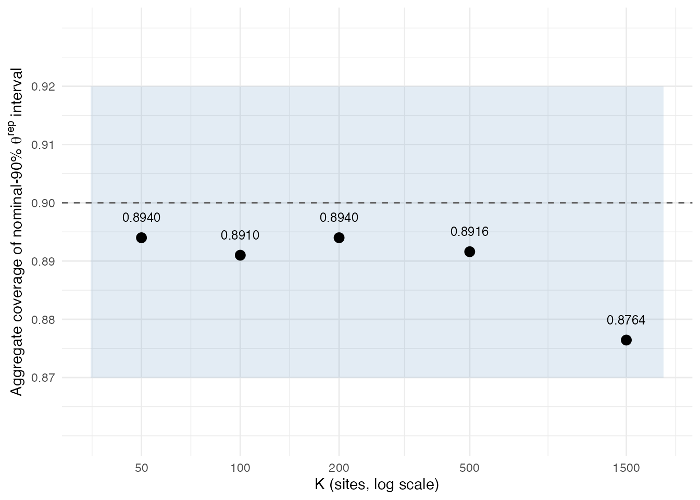

M6 · Verification and calibration
Source:vignettes/m6-verification-and-calibration.Rmd
m6-verification-and-calibration.RmdScope of this vignette
M1 through M5 specified the empirical-Bayes deconvolution problem, the log-spline parameterisation of the mixing distribution , the random-effects hierarchy, the discrete support and natural-cubic-spline basis, and the locked Stan program and compile cache. M6 closes the methodological track. It documents the four-tier verification ladder that the package’s release decision rests on and the all-twenty-replication Lee-Sui aggregate coverage evidence that gates v0.1.0. The applied counterpart A7 walks through one replication end to end; M6 covers all five values and the full twenty replications per that make the release ledger.
Notation reminder
Notation is unchanged from M1-M5.
is the number of sites;
and
are the per-site point estimate and within-study standard error;
is the latent site effect;
is the discrete mixing distribution on the grid
;
is the natural-cubic-spline basis matrix;
is the spline coefficient vector and
is the smoothness precision. The per-site posterior replicate
,
drawn from the discrete posterior on the grid via
categorical_rng, is the calibrated estimand on which the
release gate is set.
Why verification matters
The package fits a fully Bayesian log-spline random-effects model on heteroscedastic meta-analytic data, exposes per-site posterior intervals on as its headline summary, and asks the analyst to act on those intervals. A user reading a nominal-90% interval expects the long-run rate at which the interval traps the latent effect to be close to 90% under known data-generating conditions. The package must produce defensible evidence that this is so, on data of the family the model is designed for, before release.
Verification cannot be reduced to a single end-to-end coverage test. A calibrated-interval coverage figure can fail through any of several disjoint mechanisms: a transcription error in the spline basis, a cache subsystem that returns a stale binary, a sampler-init regression that lengthens warmup, a grid recipe that no longer matches its committed reference, or a model-block edit that shifts the marginal likelihood. Each mechanism is best detected at its own granularity. The package therefore organises verification into four tiers, each targeting a different class of failure mode at a different numerical tolerance.
The pyramid is determined by tolerance band, not by wall-clock runtime. Tier 0 carries the most tests at the tightest tolerance; Tier 3 carries the fewest at the loosest. A slow integration test that asserts a machine-precision invariant remains Tier 0, and a fast unit test that asserts a 5% bound remains Tier 2. The construction produces a clean localisation property: a Tier 0 failure points at a single line of code, since an algebraic invariant cannot fail by 5%, only by being wrong; a Tier 3 failure can implicate model, grid, cache, or inferential framework and requires triage.
Tier 0: deterministic invariants
Tier 0 collects the algebraic and structural invariants of the
package, asserted at machine precision (a relative or absolute tolerance
of
)
or at byte identity. Seventeen Tier 0 targets are recorded in
tests/testthat/verification_targets.csv; sixteen are
release-blocking and active at v0.1.0, and one is non-blocking. The
targets divide into three groups.
The first group asserts algebraic identities on the prior and basis.
The simplex normalisation
is checked at
after every softmax(B\alpha) evaluation. The basis matrix
is checked for finite entries and, jointly with the constant vector, for
full rank
in the intercept-augmented form that the identifiability argument of M2
and M4 requires. The augmented form is necessary because a model with
alone can be made unidentifiable when
;
the rank check rules that case out at the grid-construction
boundary.
The second group asserts byte-level identity for the locked artefacts
of the package. Three SHA-256 digests are stored in
inst/locked-core-checksums.txt, one each for
inst/stan/efron_re.stan, R/grid.R, and
R/data-prep.R. The audit test recomputes the digest of each
file via digest::digest(path, algo = "sha256", file = TRUE)
and asserts byte equality against the ledger. Three byte-identity
fixtures store the output of the three replication-faithful grid methods
(paper_realdata, paper_simulation,
paper_sensitivity) as RDS payloads; a silent change to the
grid formula would surface immediately as a fixture mismatch.
The third group asserts structural counts and cache determinism. The
bef_fit_re metadata schema is locked at thirteen fields.
The Stan generated-quantities block produces exactly nine quantities.
The eleven-field cache-key payload of M5 produces a deterministic
SHA-256 for any fixed payload. The post-fit invariants
and
are checked on the generated-quantity output of every fit, closing the
two-pass-variance cancellation paths flagged in M5.
Tier 1: closed-form and quadrature parity
Tier 1 collects cross-checks of R-side computations against closed-form references and reference implementations from the base R distribution, asserted at a tolerance of (or for identities that are effectively algebraic). Seven Tier 1 targets are release-blocking and all are active.
Three Tier 1 targets exercise the spline basis and the discrete prior
construction. The natural-cubic-spline basis produced by
make_efron_grid() is required to agree with the reference
produced by splines::ns() at
on a fixed test grid. The discrete prior
obtained from the paper_simulation method is required to
agree with the reference produced by prop.table() on a
deterministic input vector at
.
These two targets bind the grid and basis construction documented in M4
to the canonical base-R implementations that the rest of the R ecosystem
cross-references.
Three further Tier 1 targets exercise the closed-form posterior
algebra of M3. At
the Normal-Normal posterior moments admit a closed form; the package’s
per-site posterior reconstruction is checked against that closed form at
.
The prior moments
and
are checked against Gauss-Hermite quadrature on the corresponding
integrals at the same tolerance. The per-site MAP,
,
is checked against the maximiser returned by optim() on the
per-site closed-form objective.
A final Tier 1 target checks that posterior::quantile2()
returns the same per-site interval endpoints as
base::quantile() on a fixed draws_array, at a
tighter algebraic tolerance of
.
The posterior summarisation pipeline of M5 passes through
quantile2; the cross-check rules out a silent change in the
draws-summary layer.
Tier 2: deconvolution parity
Tier 2 collects cross-checks against alternative deconvolution implementations, asserted at the 5% to 10% bands that reflect genuine prior-class differences. Six Tier 2 targets are recorded; none are release-blocking and all are deferred at v0.1.0.
The Tier 2 reference is the penalised maximum-likelihood
non-parametric deconvolution implemented in deconvolveR
(Narasimhan and Efron, 2020, Journal of Statistical Software).
The comparison is restricted to homoscedastic z-score panels
()
at
,
because deconvolveR is designed for the homoscedastic case
and the heteroscedastic regime the package is designed for would
conflate two distinct sources of disagreement. Within the homoscedastic
regime the band tolerances are 5% for per-site posterior means and 10%
for the marginal moments of
;
the loose bounds reflect the full-Bayes-versus-penalised-MLE prior-class
difference rather than a numerical disagreement.
Tier 2 is deferred to v0.2 because the deferred targets are informative rather than blocking: a Tier 2 disagreement is expected behaviour at the band tolerances and does not, by itself, indicate a package fault. The Tier 2 row schema is committed at v0.1.0 so that a v0.2 reactivation requires no schema migration.
Tier 3: live HMC calibration on the Lee-Sui benchmark
Tier 3 collects the release-blocking calibration targets: aggregate empirical coverage of the nominal-90% interval on the per-site posterior replicate , computed over twenty independent replications of the Lee-Sui benchmark at each of five site counts . The acceptance band is at the nominal level . Five Tier 3 rows are release-blocking and all five are active. Two additional Tier 3 rows are non-blocking diagnostics deferred to v0.2.
The benchmark generator is the heteroscedastic twin-towers mixture
documented in Lee and Sui (2025, Mathematics) and used in the
Lee-Sui
small-
shrinkage analyses. Five locked fixtures store the input arrays for each
:
tests/testthat/_fixtures/lee_sui_K{50,100,200,500,1500}.rds.
Each fixture is a v2-schema bundle that carries twenty
replications, each a
length-
triple (theta_hat, sigma, theta_true) together with
provenance metadata. The site counts span the
small-
regime in which discrete-grid deconvolution is most sensitive to grid
and prior choices (K = 50, 100), the mid-range regime in which most
applied multisite analyses operate (K = 200, 500), and the
densely-sampled regime in which recovery of
becomes a leading constraint on coverage (K = 1500).
The harness tests/testthat/test-tier3-live-harness.R
loops over the five
values and the twenty replications per
.
For each replication it fits
bayes_efron_fit(theta_hat, sigma) with the v0.1 default
configuration (four chains, 1000 warmup iterations, 3000 sampling
iterations per chain, init = 0.5,
adapt_delta = 0.9, the project-canonical Stan sampler
seed), extracts the per-site posterior replicate draws
,
computes per-site 90% intervals via
posterior::quantile2(probs = c(0.05, 0.95)), and records
the per-site coverage rate as the fraction of sites for which
lower <= theta_true <= upper. The replication-level
coverage is the mean of per-site indicators on the replication’s
sites; the aggregate
-level
coverage is the mean of the twenty replication-level rates. Because
is fixed within a row, the aggregate is equivalent to a pooled fraction
over
site-level indicators. The release-blocking assertion is that all five
aggregate rates lie in
.
The band’s two-sided structure is intentional. The lower bound
budgets a small but explicit deficit for under-coverage: intervals that
are mildly narrow under the generator remain in band provided the
deficit is bounded. The upper bound denies credit for over-conservatism:
a release that buys coverage by inflating intervals well beyond the
nominal level is also out of band. The pre-specified band is recorded on
each of the five Tier 3 rows as expected_value_lower = 0.87
and expected_value_upper = 0.92.
The five accepted aggregate coverage values that constitute the v0.1.0 release evidence are reproduced in the constants block at the top of this vignette and rendered in the table and figure below. The Tier 3 evidence is intentionally benchmark-scoped: it underwrites calibration of intervals on the locked Lee-Sui all-twenty-replication fixtures under the v0.1 default fit configuration. It does not underwrite a generic frequentist coverage claim for arbitrary data-generating mechanisms, nor for new grid choices, nor for alternate sampler settings; users whose data depart materially from the twin-towers generator should treat the band as suggestive and run a scenario-specific calibration test of their own.
| K | Aggregate coverage | Site denominator | In band |
|---|---|---|---|
| 50 | 0.8940 | 1000 | yes |
| 100 | 0.8910 | 2000 | yes |
| 200 | 0.8940 | 4000 | yes |
| 500 | 0.8916 | 10000 | yes |
| 1500 | 0.8764 | 30000 | yes |
The K = 1500 acceptance
The row is the worst case of the five and the only Tier 3 row that was repaired before acceptance. Its accepted aggregate coverage is on a denominator of site-level coverage indicators, against the same band. The result cleared the lower bound by approximately four-tenths of a percentage point, the slimmest margin of the five. The pre-repair result fell below the lower bound; the repaired result is the one recorded in the ledger and reproduced above. The repair exercise validated the assumption underlying the band’s lower bound, that the model can deliver in-band aggregate coverage in the densely-sampled regime, while leaving the headroom small enough to flag as the constraint case for any future change that might affect calibration.
The accepted replication fits retained sampler diagnostic flags on , bulk effective sample size, and tail effective sample size. The ledger treats these flags as calibration-tier diagnostic metadata and does not treat them as Tier 3 acceptance gates: a diagnostic flag at the conventional thresholds for or effective sample size does not invalidate the aggregate coverage acceptance, but the flag is preserved on the accepted fits so that the diagnostic stream and the coverage stream remain separable. The v0.1.0 release ledger therefore records the acceptance with the diagnostic flags attached.
Reproducibility
Tier 3 live verification is environment-variable gated. Default
R CMD check skips the live harness entirely. Setting
BAYESEFRON_RUN_LIVE = 1 opts in to a smoke path that fits
one replication at
and checks that the harness executes without error. Setting
BAYESEFRON_RUN_FULL_LIVE = 1 opts in to the release-nightly
path that fits all twenty replications at all five
values; on a reference runner the full matrix is the dominant wall-clock
cost of CI. Fresh full-live Tier 3 refits without a replay matrix
require the additional explicit opt-in
BAYESEFRON_TIER3_OK_TO_REFIT = 1, so that a routine
full-live invocation does not silently launch a fresh Stan
recalibration.
The accepted evidence matrix can be replayed instead of refit. The
environment variable BAYESEFRON_TIER3_FULL_LIVE_MATRIX
points to a runner-local copy of the accepted Step 7.7 evidence matrix;
when set, the harness validates the matrix against the band and returns
without sampling. Replay-mode verification preserves the audit chain on
the accepted aggregate values while keeping the CI envelope within
tag-release budget. The replay path and the fresh-fit path return the
same assertion structure; the difference is the source of the aggregate
coverage numbers, not the assertion that those numbers lie in
.
The .github/workflows/check.yml configuration prepares a
CI-local replay copy of the accepted matrix for version-tag, scheduled,
and manual full-live runs. The configuration sets
BAYESEFRON_RUN_FULL_LIVE = 1 and the matrix env var on
those trigger branches, so that release-tag verification confirms the
accepted matrix without an accidental fresh recalibration. The
pull-request smoke path is independent and runs on the smaller
envelope.
A coverage-vs-band figure
The figure below shows the five accepted aggregate coverages against the band and the nominal reference line. The horizontal axis is the site count on a logarithmic scale; the vertical axis is the aggregate coverage. The shaded region is the pre-specified acceptance band; the dashed line is the nominal level; each point is the accepted aggregate coverage from the twenty-replication full-live matrix. The figure has no inferential content beyond the table above; it makes the position of each within the band, and the proximity of the point to the lower bound, visible at a glance.
library(ggplot2)
ggplot(tier3, aes(x = K, y = coverage)) +
annotate(
"rect",
xmin = min(tier3$K) * 0.7, xmax = max(tier3$K) * 1.3,
ymin = band_lower, ymax = band_upper,
alpha = 0.15, fill = "steelblue"
) +
geom_hline(yintercept = nominal, linetype = "dashed", colour = "grey40") +
geom_point(size = 3) +
geom_text(
aes(label = sprintf("%.4f", coverage)),
nudge_y = 0.0035, size = 3.2
) +
scale_x_log10(breaks = tier3$K) +
scale_y_continuous(
breaks = c(band_lower, 0.88, 0.89, nominal, 0.91, band_upper),
limits = c(0.86, 0.93)
) +
labs(
x = "K (sites, log scale)",
y = expression("Aggregate coverage of nominal-90% " * theta^rep * " interval")
) +
theme_minimal(base_size = 11)
Accepted aggregate coverage at nominal-90% per K, with the [0.87, 0.92] acceptance band shaded.
op <- par(mar = c(4.5, 4.5, 1, 1))
plot(
tier3$K, tier3$coverage,
log = "x", pch = 19, cex = 1.4,
xlab = "K (sites, log scale)",
ylab = expression("Aggregate coverage of nominal-90% " * theta^rep * " interval"),
ylim = c(0.86, 0.93),
xlim = c(min(tier3$K) * 0.7, max(tier3$K) * 1.3),
axes = FALSE
)
rect(
xleft = min(tier3$K) * 0.7, xright = max(tier3$K) * 1.3,
ybottom = band_lower, ytop = band_upper,
col = grDevices::adjustcolor("steelblue", alpha.f = 0.15), border = NA
)
abline(h = nominal, lty = 2, col = "grey40")
points(tier3$K, tier3$coverage, pch = 19, cex = 1.4)
text(tier3$K, tier3$coverage + 0.0035, sprintf("%.4f", tier3$coverage), cex = 0.8)
axis(1, at = tier3$K, labels = tier3$K)
axis(2, at = c(band_lower, 0.88, 0.89, nominal, 0.91, band_upper), las = 1)
box()
par(op)The figure renders identically through the ggplot2 backend (when available) and a base-graphics fallback. The chunk-eval gating mirrors the package’s own plot dispatch documented in A6.
Reading map
This vignette closes the methodological track. The applied counterpart A7 walks through one replication of the Lee-Sui benchmark end to end and traces the same per-site interval that the Tier 3 harness aggregates here; reading A7 alongside this section gives the within-replication picture that complements the across- release ledger.
- A7 - Case study, Lee-Sui replication light. One replication, with the per-site posterior summary, the caterpillar view, and the coverage interpretation on a single replication’s fit.
- NEWS.md. The canonical release-note record of the accepted Tier 3 evidence, including the verbatim aggregate coverage value and the env-var gating contract.
-
tests/testthat/verification_targets.csv. The ledger of all Tier 0, Tier 1, Tier 2, and Tier 3 targets, including the five release-blocking Tier 3 rows with the band recorded on each row.
A reader who has followed M1 through M6 holds the full chain from the empirical-Bayes formulation, through the log-spline parameterisation, the random-effects hierarchy, the discrete grid and basis, the locked Stan program and cache, and the four-tier verification ladder that licences the v0.1.0 release.